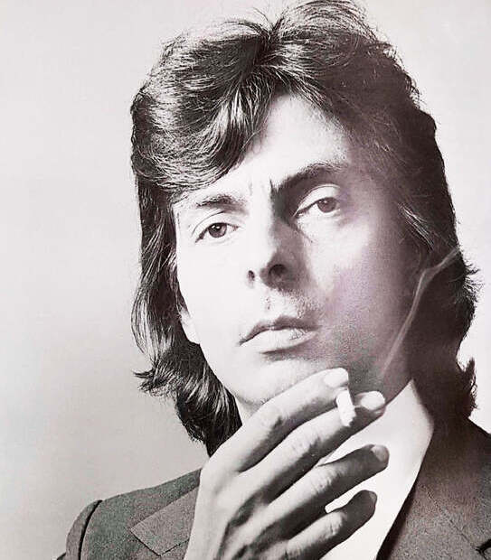
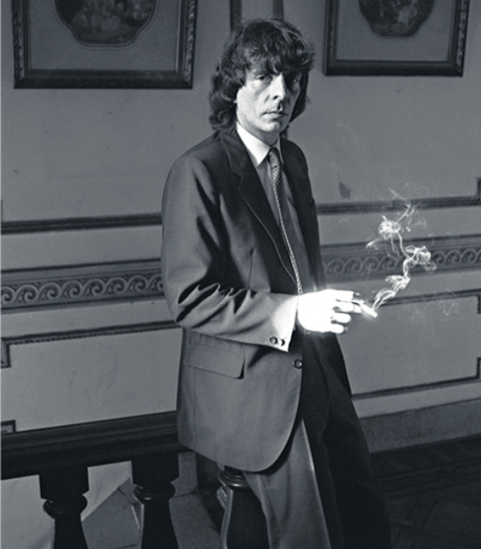

Salzman examinó su mano y vio centenares de figuras lejanamente parecidas a los arcanos del Tarot: la Riqueza, el Poder, la Fama, el Amor, la Inteligencia, la Fuerza, el Honor, la Juventud, la Razón, la Salud, la Imaginación, el Arte, la Clarividencia, el Valor, la Fe, la Suerte, la Belleza, la Virilidad, la Inspiración… Sin hacer ningún gesto, dio vuelta las cartas sobre la mesa.
—Buen juego —dijo el Tallador—, pero no alcanza.
Y jugó el naipe de la Muerte.
-"Cartas Marcadas", Alejandro Dolina.